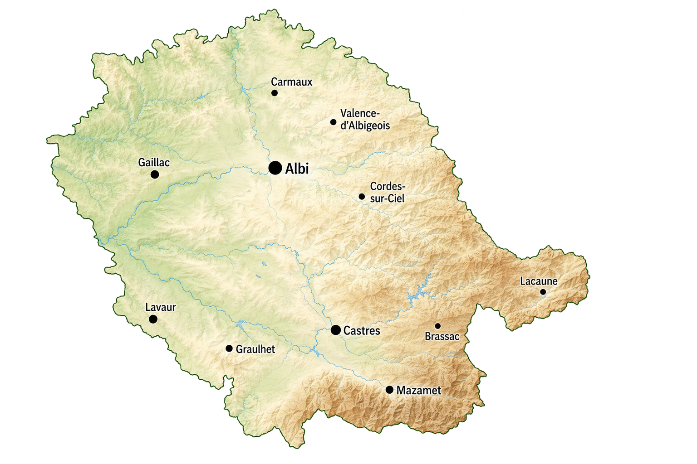
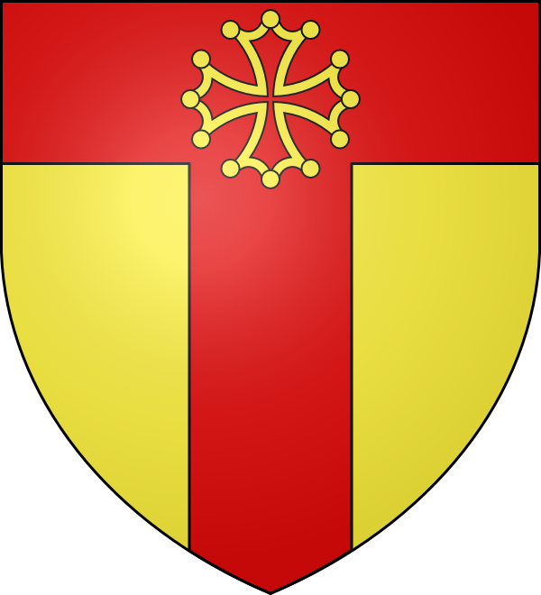
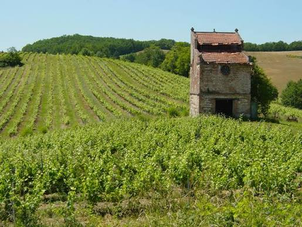

Le vignoble de Gaillac compte parmi les plus anciens de France, avec une tradition viticole remontant à l'époque gallo-romaine. Implanté le long du Tarn, sur des coteaux exposés au sud, il aurait précédé le vignoble bordelais de plusieurs siècles, exporté dès l'Antiquité par voie fluviale.

Au Moyen Âge, les moines bénédictins de l'abbaye Saint-Michel de Gaillac développent et structurent la viticulture locale, faisant du vin de Gaillac une référence commerciale majeure, expédié par le fleuve jusqu'à Bordeaux puis vers l'Angleterre et les Flandres.
Le vignoble a connu son lot d'épreuves, notamment la crise du phylloxéra à la fin du XIXe siècle, qui a bouleversé durablement le paysage viticole du Tarn avant une lente reconstruction au XXe siècle autour de cépages locaux préservés.
Aujourd'hui, l'appellation Gaillac, reconnue en AOC depuis 1938, se distingue par la richesse de ses cépages autochtones, produisant une gamme complète de vins rouges, blancs secs, blancs moelleux et effervescents, reflet d'un terroir unique en France.
Gaillac rouge : assemblage typique de Braucol, Duras et Syrah, aux tanins souples et fruités.
Gaillac blanc sec : dominé par le Mauzac et le Len de l'El, aux notes florales et légèrement anisées.
Gaillac méthode ancestrale : vin effervescent naturel, produit selon un procédé plus ancien que la méthode champenoise.
Abbaye Saint-Michel de Gaillac, berceau historique de la viticulture, aujourd'hui maison des vins de Gaillac.
Caves et domaines viticoles du vignoble, ouverts à la dégustation et à la visite toute l'année.
Marchés et fêtes des vins organisés régulièrement à Gaillac et dans les villages alentour.